KIDMO Risk Score
Number of recipients: 1
Summary:
kidmo rank 2-year risk 5-year risk
1 1.46 75% 0.05279943 0.1003058R for predicting kidney transplant success
Simon Schwab
Swisstransplant, Bern
Center for Reproducible Science and Research Synthesis, University of Zurich
16. September 2026
Study objective
KIDMO is a clinical prediction model to estimate graft loss risk in deceased-donor kidney transplantation. It uses a combination of
- donor and
- recipient clinical characteristics.
Goal
Inform clinicians and patients of individual outcome risks at the time of organ offer to support decision-making and improve outcomes.
Clinical prediction models play a vital role in advancing personalized medicine.
Design, participants, setting and outcome
| Design | National multi-center retrospective cohort study. |
| Participants | All deceased-donor kidney transplant recipients from 2008 to 2021. |
| Setting | Six Swiss transplant centers: Basel, Bern, Geneva, Lausanne, St. Gallen, and Zurich. |
| Primary Outcome | Time to graft loss (interval from transplantation to irreversible graft failure). Patient death was treated as a competing risk. |
Swiss transplant centers
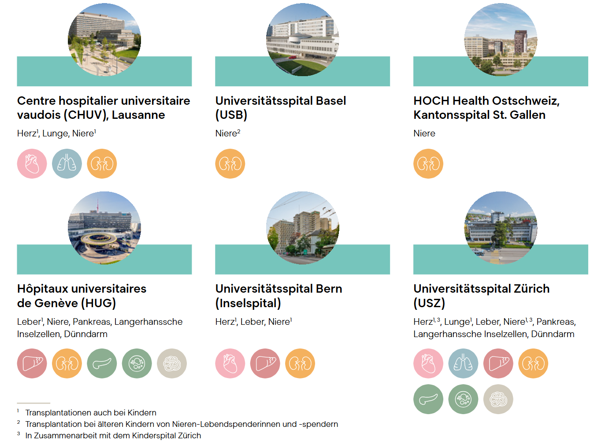
Methods
- Competing risk regression (Fine & Gray model)
- Non-linear modelling (restricted cubic splines)
- Model performance: C-statistic, area under the curve (AUC), Brier score, calibration plot, calibration in-the-large, calibration slope
- Internal validation and optimism correction (bootstrapping with B=1,000)
- Internal-external cross-validation
- Clinical utility (decision curve analysis and net benefit)
Study protocol
We published a study protocol.1
- Prespecified predictors
- Sample size calculation2
- N=2,042 recipients
- 167 events
- 19 parameters (16 variables)
- EPP 8.8
- Statistical analysis plan
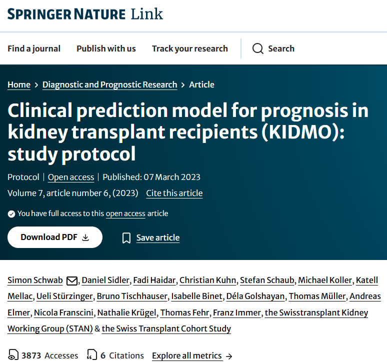
Participant flow
87% of the population in the model development.
Exclusion:
- 10.1% with no consent
- 2.9% missing data
Dropouts (were censored):
- 34 (1.4%) dropouts
- 33 moved away
- 1 other reason
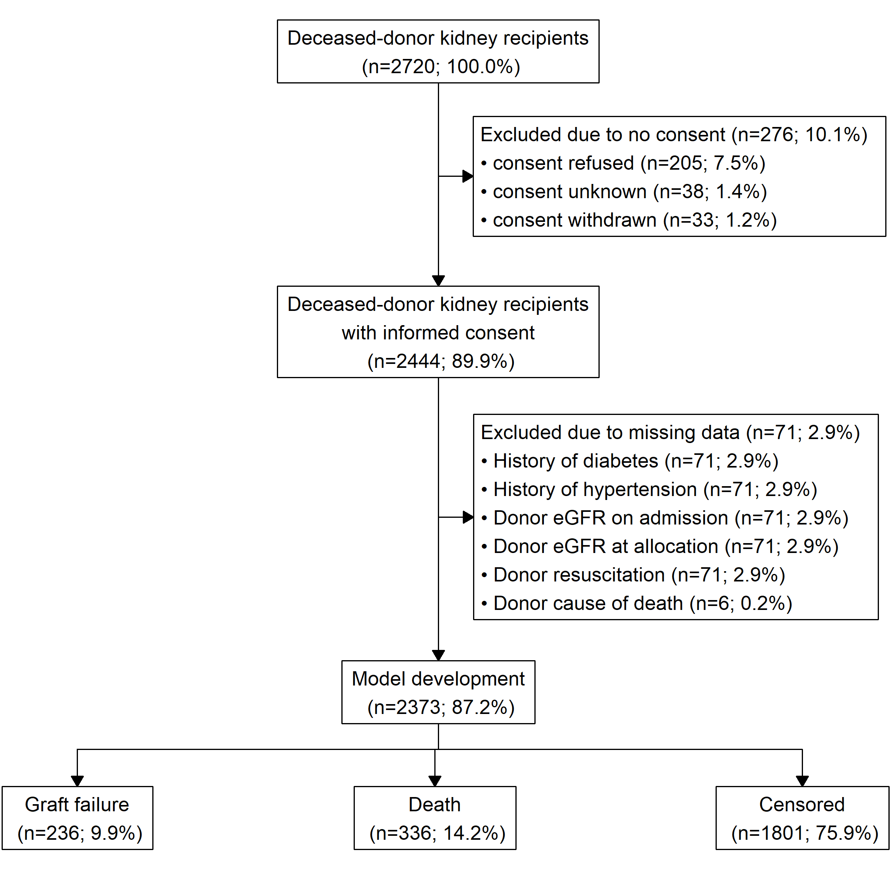
Receipient and donor characteristics
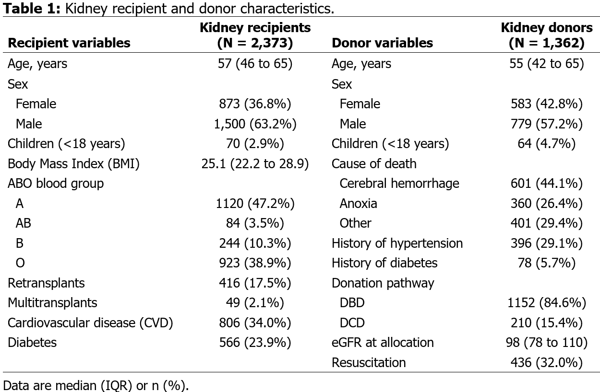
Cumulative incidence
Probability of an event by time t (with 95% confidence bands).
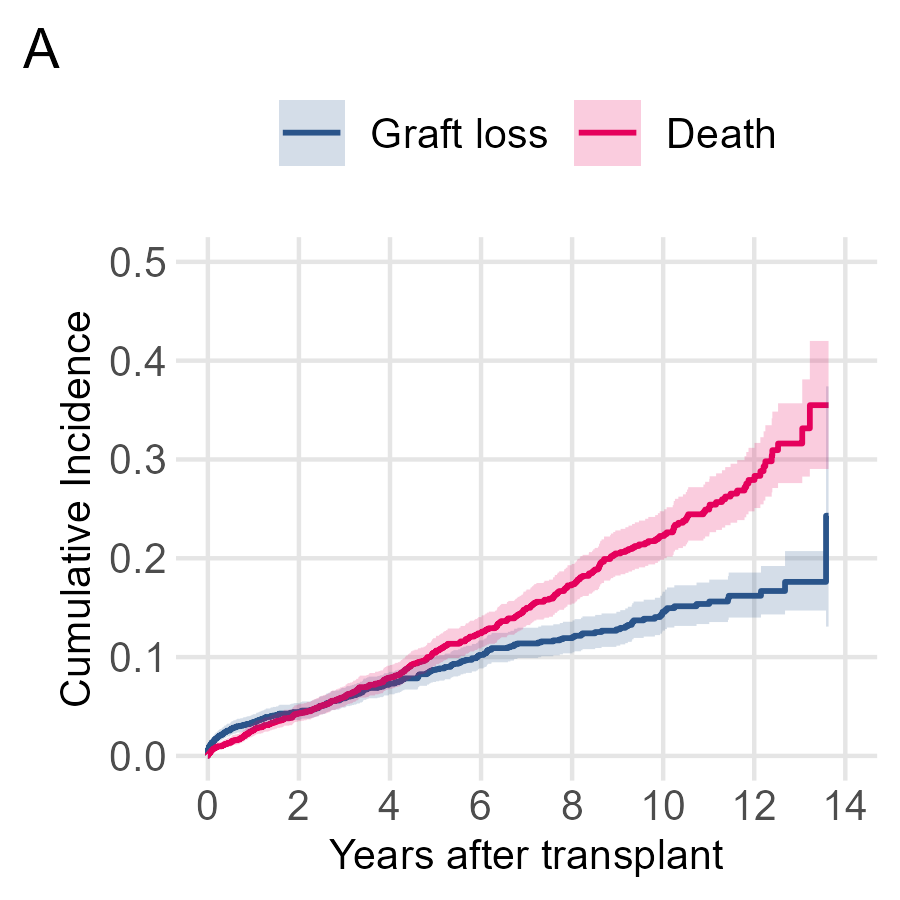
| Outcome | 2-years | 5-y years |
|---|---|---|
| Graft loss | 4.4% (3.6–5.3) | 8.7% (7.4–10.0) |
| Death | 4.3% (3.5–5.2) | 10.4% (9.0–11.9) |
Full model
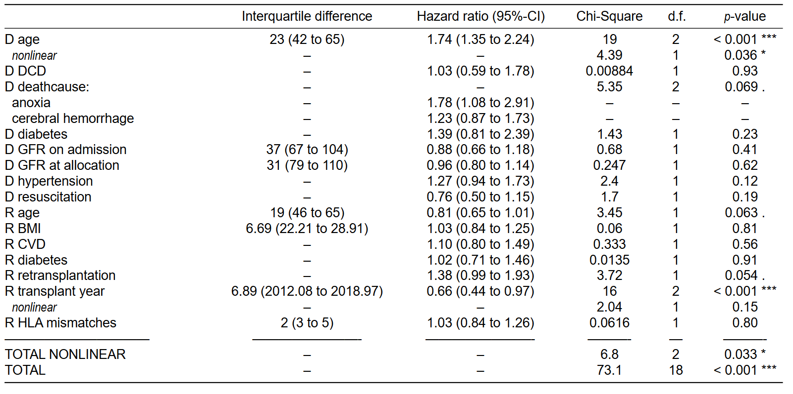
- 15 Predictor variables altogether
- [–recipient DSA, –recipient time on dialysis]
- [+transplant year]
Variable selection
- Backward elimination with AIC (p≈0.157) across 1,000 bootstrap samples1
- Selection criterion: variables contained in at least 50% of the reduced models
→ Entire model-building process was repeated within each bootstrap
Final model
- 7 variables
- 4 donor variables
- 3 recipient variables
Final model
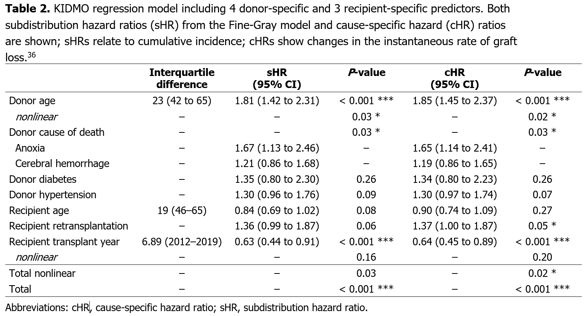
Not all predictors are statistically significant and that is okey!
Partial effects
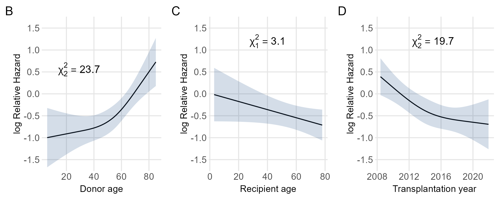
Partial effects of the continuous variables (B) donor age, (C) recipient age, and (D) transplantation year on the graft loss rate.
Model equation
Uer the Fine–Gray formulation, the subdistribution hazard leads to the following expression for the graft-survival function:
\[\Pr(T\geq t~|~X) = S_{0}(t)^{\mathrm{e}^{X\beta}},\]
where \(S_{0}(t)\) denotes the baseline survival function. Baseline survival values used for prediction are provided in the table below for the clinically relevant time points \(t = 2\) and \(t = 5\) years.
| \(t\) | \(S_{0}(t)\) |
|---|---|
| 2 | 0.9594 |
| 5 | 0.9225 |
Linear predictor
The term \(\mathrm{e}^{X\beta}\) is the individual-specific subdistribution hazard ratio derived from the linear predictor \(X\hat{\beta}\) shown below.
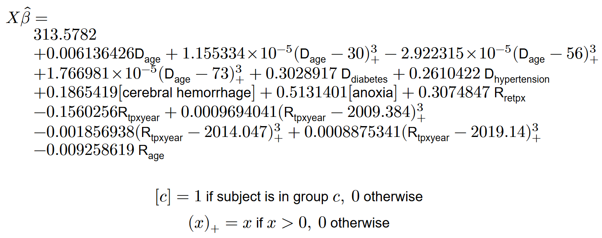
Absolute risks
The cumulative incidence, i.e., the probability of graft loss by time \(t\) for an individual with covariates \(X\), is
\[ F(t~|~X) = 1 - S_{0}(t)^{\textrm{e}^{X\beta}}, \]
where
- \(S_0(t)\) is the baseline graft survival function at time \(t\), and
- \(\textrm{e}^{X\beta}\) is the hazard ratio, obtained from the linear predictor.
Accordingly, the cumulative incidence at 2 and 5 years after transplant is given by:
- 2-year risk: \(F(t = 2 | X) = 1 - S_{0}(2)^{\textrm{e}^{X\beta}}\) = \(1 - \textrm{0.959}^{\textrm{e}^{X\beta}}\),
- 5-year risk: \(F(t = 5 | X) = 1 - S_{0}(5)^{\textrm{e}^{X\beta}}\) = \(1 - \textrm{0.922}^{\textrm{e}^{X\beta}}\).
Implementation in Swisstransplant package swt
The KIDMO risk score has been implemented in the Swisstransplant R package swt.
- https://data.swisstransplant.org/tools/
- enable easy calculation of the KIDMO score (among other stuff)
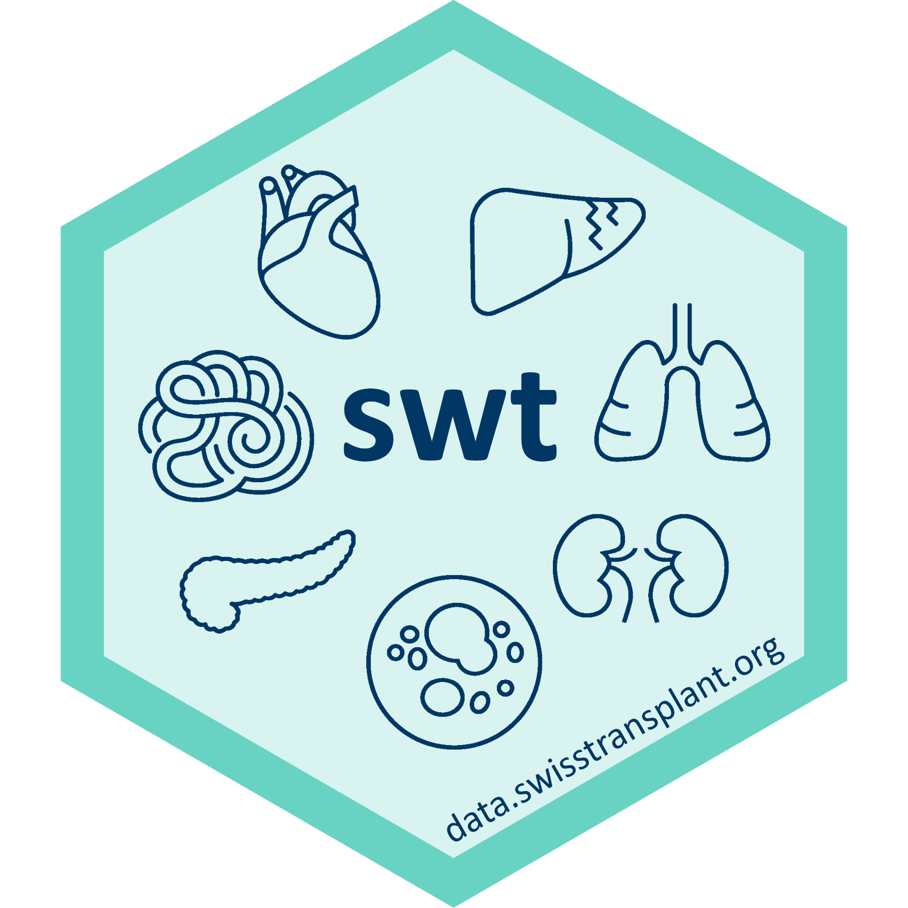
kidmo() function
Usage
Option newdata
Behind the scenes
- Model fit is stored as internal data in
sysdata.rda
(cphobject fromrms)
- Careful not to leak any patient level data!
- Write function to access internal data
- use
predict()and calculate relative and absolute risks
- Double check, double check, double check
- Technical documentation with example calculation
Plots
Plots
The returned object also includes the cumulative incidence curves.
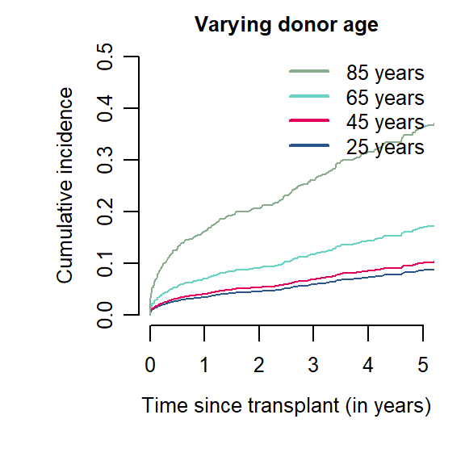
Cumulative incidence curves for recipients of kidneys from donors of varying ages, all other factors being equal.
Online calculator
Runs on psot connec clouse Quarto website that implements app with iframe
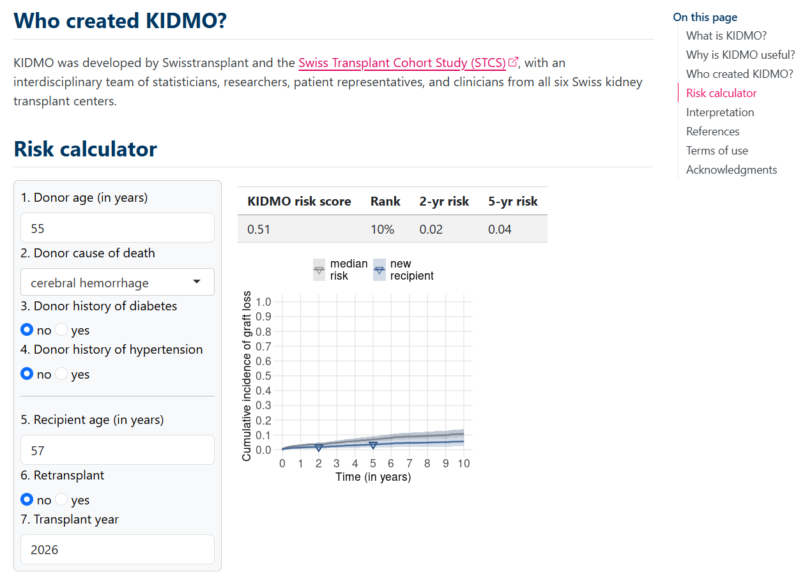

R meets Health, Zurich R User Group